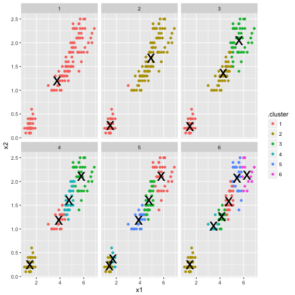

How to Write Pelican Blog Posts using RMarkdown & Knitr
Posted on Mon 20 February 2017 in R
In this post I'm going to be talking about how to easily modify your Pelican blog configuration to let you directly publish blog posts using RMarkdown. I'm assuming you already have a Pelican blog set up, so I won't be covering that in today's post. If you're interested but haven't yet set up a blog for yourself, it's quite straightforward! I recommend checking out these links:
Until now, I've been writing posts on this blog using standard markdown. This means I'd do an analysis in R, produce a series of graphs and results that I would store locally in image files, and put it all together on my own in a markdown document. It's not that bad a process, but it is a bit inefficient, and I wanted to see if there was a better way. Luckily, there's a very easy-to-use Pelican plugin called rmd_reader that will automatically convert any RMarkdown posts you have into Pelican-compliant html documents. In figuring out how to set this up, I drew heavily on these resources:
1 Setup Instructions
First, let's install the RMD Reader extension so that Pelican knows what to do. We'll do this by cloning the pelican-plugins github repository and referencing this in our Pelican configuration file. This has the added benefit of allowing you to easily use other Pelican plugins, should you decide you want to do that.
Execute the following command from the directory where you want to store this repository.
(Run from terminal):
git clone --recursive https://github.com/getpelican/pelican-plugins
Add the following to your Pelican config file. If you already have these variables defined, simple add the new path and plugin to the end of your existing list.
(Edit pelicanconf.py):
PLUGIN_PATHS = ['your-path-to/pelican-plugins']
PLUGINS = ['rmd_reader']
Make sure you have the rpy2 python package installed.
(Run from terminal):
pip install rpy2
Also make sure you have the knitr R package installed.
(Run from R):
install.packages('knitr')
2 Additional Setup
The above is the core setup, but there are a few more tweaks that I recommend you do in order to make your life easier down the road.
Add the following to your Pelican config file. Essentially what we're doing here is giving knitr instructions on how to name & where to store image files to reduce the likelihood of you having conflicts and overwriting files from older blog posts. There are several ways to do this, but this seemed the best solution to me. For further details, check out the official rmd_reader documentation.
(Edit pelicanconf.py):
STATIC_PATHS = ['figure']
RMD_READER_RENAME_PLOT = 'directory'
RMD_READER_KNITR_OPTS_CHUNK = {'fig.path': 'figure/'}
3 Testing & Examples
Finally, we're ready to test out our new setup. Try this out with your own .Rmd document or use this one, available on my Github, if you're just looking for a quick test. The steps are relatively simple:
- Save your .Rmd file into the same content folder where you'd put any other .md file for your Pelican blog
- Run your Pelican blog like you would normally.
That's it. rmd_reader will automatically execute your .Rmd file, produce the relevant graphics, and set up the html for your blog just like base Pelican would.
Just to confirm everythng is working correctly, let's do some basic operations on the iris dataset.
First let's see a simple summary of the data:
summary(iris)
## Sepal.Length Sepal.Width Petal.Length Petal.Width
## Min. :4.300 Min. :2.000 Min. :1.000 Min. :0.100
## 1st Qu.:5.100 1st Qu.:2.800 1st Qu.:1.600 1st Qu.:0.300
## Median :5.800 Median :3.000 Median :4.350 Median :1.300
## Mean :5.843 Mean :3.057 Mean :3.758 Mean :1.199
## 3rd Qu.:6.400 3rd Qu.:3.300 3rd Qu.:5.100 3rd Qu.:1.800
## Max. :7.900 Max. :4.400 Max. :6.900 Max. :2.500
## Species
## setosa :50
## versicolor:50
## virginica :50
##
##
##
Let's finish with a simple k-means cluster analysis:
library(broom)
library(dplyr)
library(ggplot2)
iris_sub <- select(iris, x1 = Petal.Length, x2 = Petal.Width)
kclusts <- data.frame(k=1:6) %>% group_by(k) %>% do(kclust=kmeans(iris_sub, .$k))
clusters <- kclusts %>% group_by(k) %>% do(tidy(.$kclust[[1]]))
assignments <- kclusts %>% group_by(k) %>% do(augment(.$kclust[[1]], iris_sub))
clusterings <- kclusts %>% group_by(k) %>% do(glance(.$kclust[[1]]))
ggplot(assignments, aes(x = x1, y = x2)) +
facet_wrap(~ k) +
geom_point(aes(color=.cluster)) +
geom_point(data=clusters, size=10, shape="x")

4 Closing Remarks
That's it! I've been meaning to get this set up for a while, and I'm pretty excited about it. Since most of my blog posts are R analyses, this is going to really simplify my workflow, which should make it much for me to actually finalize and post my results, something I've had issues with before. I'm also glad I'll be able to make greater use of R Markdown/Knitr, which will help me to organize my thoughts while analyzing as well as create reproducible research documents to share. I hope you find this useful as well!